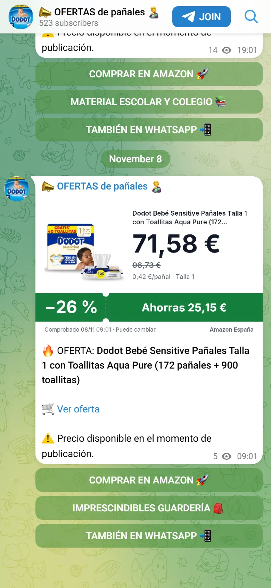

PROYECTO / 01AUTOMATIZACIÓN
Bot ofertas afiliados
De las APIs al canal, sin trabajo manual.
Un motor que consulta Amazon, AliExpress y Temu, detecta ofertas por nicho, genera el enlace de afiliación y publica solo en Telegram y WhatsApp. Cada oferta sale como tarjeta con la foto, el precio y lo que te ahorras.
- Amazon · AliExpress · Temu
- Detección por nicho
- Enlace de afiliación
- Telegram · WhatsApp

10CANALES
+1.000USUARIOS
~500 €AL AÑO